Free to forkNo licence and no copyright claim: build this game under your own name, or lift one idea from it. Why?
Game overview
Landfill Leviathan is a cartoon game about a town dump that wakes up hungry. You are the heap. Roll through town from above and eat everything smaller than you, steer clear of everything bigger, and grow until the bigger things are on the menu too.
Between meals, the heap sends a digger made of its own junk down into the ground beneath the dump, in a side-view digging game. Somewhere in the old buried layers lies the thing it needs next: a crane magnet, a jet engine, a shredder. Haul it up, swallow it, and it becomes a new body part that opens the next part of town.
It grows out of two genres that fit together better than they look: Motherlode's dig-and-upgrade loop and Tasty Planet's (and Fishy's) eat-to-grow loop, with Metroid-style gates in between and a little of Spore's cell stage, where what you attach to yourself decides what you can eat.
Target audience
Players who love the feeling of getting bigger: Katamari, Tasty Planet, the first minutes of Spore, a digging game where every trip down comes back with a little more.
They want something silly, physical and easy to read, and they're tired of games where growing means filling a bar.
The controls are WASD and the mouse, with two views. Nothing needs fast reflexes for long, and the size rule is the whole tutorial: smaller is food, bigger is trouble.
Game's purpose
Growth and power: watching the camera pull back as the heap outgrows the street, then the block, then the town.
Play and silliness: a grinning mountain of junk with saw blades for teeth and a box fan for a fin.
Discovery: finding out what's buried under the dump and what it lets the heap do.
It avoids draining respect for the player's time: a hit sheds mass you can eat right back, and a lost digger leaves its cargo where it fell.
Core concept
Grow games usually end when you're as big as the level, and digging games hand you upgrades from a shop menu.
Here the two feed each other: the surface makes the heap big enough to dig, and the dig gives it the body part it needs to keep growing. Nothing is bought; everything is swallowed.
And growing never runs out of room. When a town is eaten, the heap sends a seedling of itself to the next one, then the next region, then the next planet.
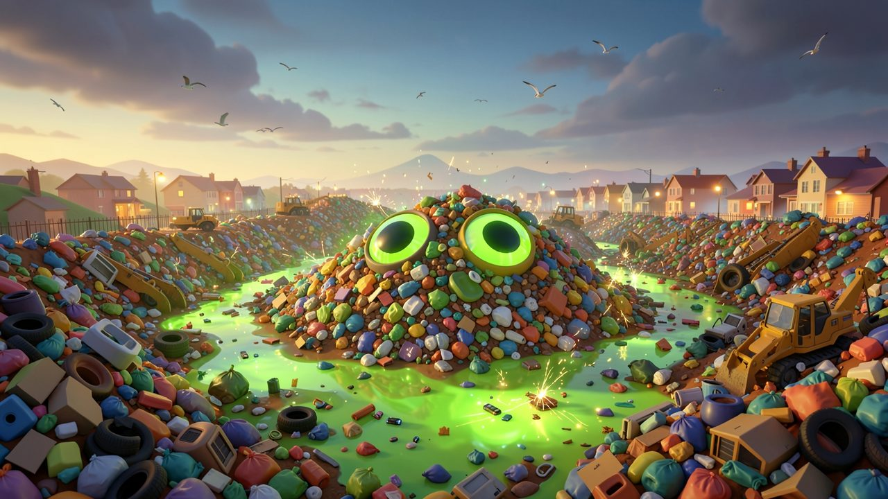
"Rotting food, leaking chemicals and a few million dead batteries. Nobody planned for the dump to wake up."
Lore and story
The dump
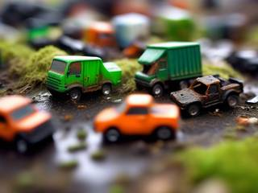
Every town has one: the landfill out past the edge of the map, where everything ends up. Decades of food scraps, paint cans, cleaning chemicals and electronics have been pressed together there, and threaded through all of it are millions of discarded lithium-ion batteries, still holding a little charge.
One stormy night the soup reaches the right mix. A current runs through the whole heap, the rot starts thinking, and the dump opens its eyes.
The heap
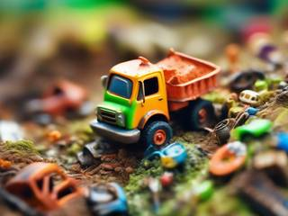
It isn't evil and it isn't clever. It's a cartoon appetite with eyes: it wants to be bigger, and the town is full of things to be bigger with. Everything it swallows becomes part of it, and anything mechanical it swallows becomes a working part of it.
The heap never eats people. They hear it coming (it is not quiet) and the town evacuates ahead of it, by bus, by bicycle and occasionally on foot with a lamp under one arm. What's left behind is fair game.
The town
The town answers with its sanitation department: a fleet of automated garbage trucks, compactors, street sweepers, recycling sorters and, for emergencies, an incinerator on treads. Nobody rides in them. To a small heap they're terrifying. To a big one they're lunch.
The job right now
Eat the town, down to its tallest landmark. Then do what every heap does when it's full: pack a little of itself into a garbage bag and send it somewhere new.
Controls and interface
There are two views. On the surface you see the heap from above and roll it around with its attachments aimed at the pointer. Underground the camera turns side-on and you steer a digger through tiles, Motherlode style. Some surface areas (a cliffside quarry, a canal lock) turn side-on as well when the place calls for it.
Surface: move
W A S D
Roll in any direction; the bigger the heap, the more momentum
Mouse
Aim the attachments
F
At a dig site: send the digger down
Surface: attachments
Left click
Use the primary attachment (saw, harpoon, magnet…)
Right click
Use the secondary attachment
Wheel
Swap which attachments are on the two buttons
Underground: move
A D
Drive left and right, drilling through what's in the way
W
Thrust upward
S
Drill down, or drop faster
Underground: tools
Space
Use the digger's ability
1–4
Consumables: explosives, a hazard patch, an escape float back to the surface
Esc
Pause, in either view
The heap's size is always shown as a ring around it, colored against whatever is nearest: green for things you can eat, orange for things that can hurt you. A small panel lists its attachments, and the town map marks dig sites and the gates still closed to you.
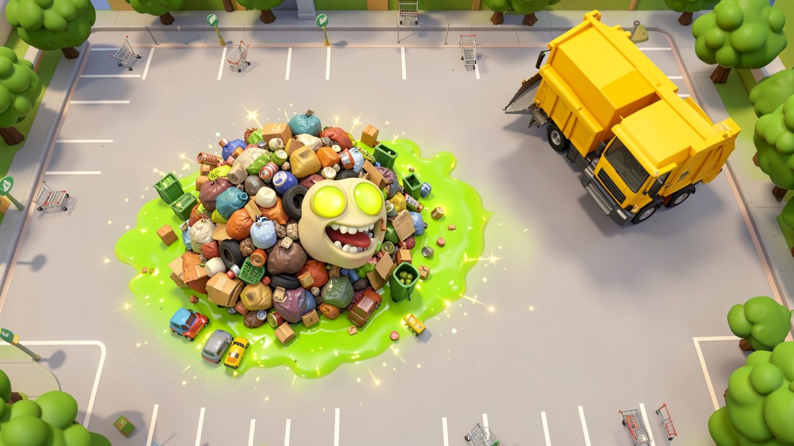
"Anything smaller than the heap is food. Anything bigger can knock pieces off it."
Game layers
01 · Moment-to-moment
Eat, dodge, grow
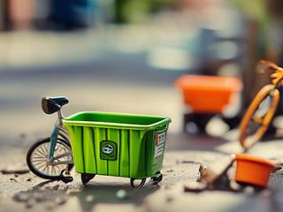
Roll into anything smaller and it's swallowed, and the heap grows a little. Bump anything bigger and it knocks chunks off you. The art is in reading the street: which bins you can take now, which sweeper is about to turn round, which car you're one meal away from.
Underground it's a different rhythm: picking a route through soft and hard tiles, grabbing what spills out of them, and judging how far you can push before the digger has to come home.
02 · Low metagame
One town, from the dump to the landmark
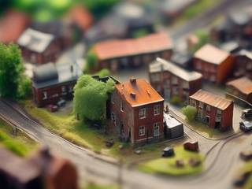
A campaign is one generated place: a town, a district, an industrial port. The heap starts small at its dump and grows outward, flipping between the surface and the dig sites, until it can swallow the place's tallest landmark.
The place is laid out like a Metroid map. Some parts are closed to the heap until it has the right body part: a fenced scrapyard needs a saw, a river needs something that floats, a foundry district needs heat-proofing. Those parts are found at the dig sites, so the surface tells you where to dig, and the dig tells you where to go next.
03 · High metagame
The seedlings
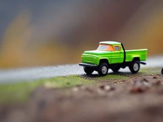
When a place is eaten, the heap packs a seedling of itself into a garbage bag and sends it on: in the back of a truck to the next town, on a cargo ship to the next region, and once the planet has nothing left, on a scrap rocket to the next world. Each landing starts a new campaign, and the timeline only moves forward.
The planet map fills in with every place the heap has become, and a family tree keeps one entry per seedling: where it landed, what it swallowed last, how big it got and the body parts it ended up with. That's the record of the heap's story, never a score.
04 · Practical game flow
One dig or one evening
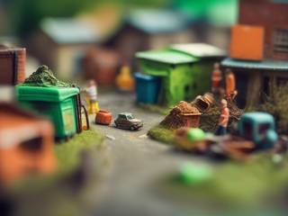
Open the game and you're back at the heap, wherever you left it. A trip down a dig site takes a few minutes, a district a half hour, a whole town an evening or two.
Quit at any moment and the heap, the town and the half-dug tunnel wait exactly as they were.
Game modes
There's one mode: the heap's timeline. Everything happens in it, in nested pieces you can stop between:
The worldsEndless: planet after planet, each one eaten place by place.
A planetIts towns, regions and ports, filled in on the planet map.
A campaignOne place, from the dump to the landmark: an evening or two.
A tripOne stretch of surface between dig sites, or one dig: a few minutes.
Features and mechanics
The heart of it
Junk becomes anatomy
The heap has no upgrade menu. It has attachments: whatever machine it swallows and keeps, it can use. A circular saw becomes a set of teeth for cutting through fences. A box fan blows things away, and a vacuum cleaner pulls them in. A crane magnet on its cable drags metal toward the mouth. A harpoon gun reels in things from across the street, a pair of water heaters become thrusters, and a set of shopping-cart wheels makes it fast on tarmac.
Each one is one of two kinds. Combat attachments change how the heap deals with things that fight back: reach, aim, armor-breaking, wider or faster attacks. Environment attachments change where it can go and what it can eat: floating, heat and acid proofing, climbing, swallowing a material it couldn't digest before.
The town's machines play by the same rule. A sweeper with a brush can only push; a compactor with a crusher squeezes; a recycling sorter with grabber arms can pull your metal parts back out of you. Read what's bolted onto a thing, and you know what it will do.
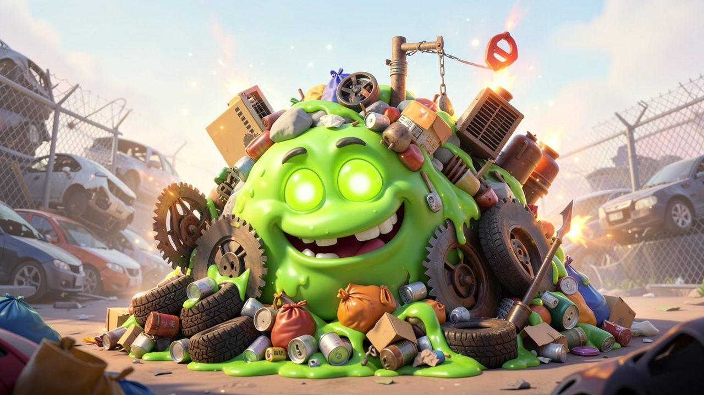
"Every machine the heap swallows becomes a working body part: a saw for teeth, a fan for a fin."
The other view
Under the dump
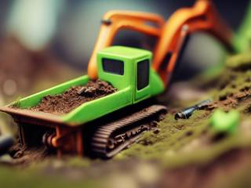
Dig sites are the places where the ground is worth opening: an old dump under the new one, a sealed bunker, a flooded railway tunnel. The heap grows a digger out of its own mass and sends it down, and the game turns into a side-view tile digger.
Tiles have hardness (topsoil, compacted trash, clay, concrete, bedrock), and breaking one releases what's inside it: scrap metal, copper wire, insulation, batteries. What the digger brings back is how it improves, with no shop in between: metal hardens its shell and drill, insulation proofs it against heat and cold, batteries carry it further. The deeper layers have their own hazards: groundwater, gas pockets, acid seepage, the heat of an old buried fire, and the odd battery that bursts into flame.
At the bottom of each site is the reason you came: the buried machine that becomes the heap's next attachment.
If the digger breaks, nothing is undone. Its wreck and whatever it carried stay down in the tunnel for the next digger to collect, and the new one costs the heap a little of its size, which more eating fixes.
The one rule
Size is everything
On the surface, everything has a size, and the heap's size against it decides what happens. The camera pulls back as the heap grows, so the world keeps fitting on the screen.
The heap is about as big as
It can eat
What still hurts
A trash bag
Litter, cans, cardboard
Bins, bicycles, sweepers
A dumpster
Bins, bikes, shopping carts, fences
Cars and the garbage trucks
A truck
Cars, sheds, bus shelters, trees
Compactors and empty houses
A house
Houses, trucks, the sanitation fleet
The incinerator, warehouses, towers
A city block
Everything up to the landmark
Only the landmark's defenses
A hit from something bigger knocks chunks of junk off the heap and makes it smaller. Those chunks land nearby, and they're food: roll back over them and the size returns. A setback is a detour of a few seconds, not a grind.
Who's out there
The cleanup crew
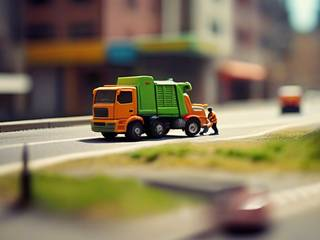
The things that move follow a few simple temperaments. Roamers drift around at random. Hunters have eyes: when they see the heap, they come for it if it's smaller and flee if it's bigger, so the street's mood flips the moment you outgrow it. Hybrids hunt from a distance and lose their nerve up close. Ambushers sit still: a turret sprinkler, a parked compactor waiting for something small to roll in front of it.
Underground, the enemies work like the ones in classic Super Bomberman: maintenance crawlers and burrowing machines that obey the tile rules just as the digger does, and bosses, a tunnel-boring machine or a sewer-cleaning robot, that bend those rules in readable, fair ways.
The local wildlife has opinions too. Seagulls peck bits off a small heap and scatter from a big one. Nobody eats a seagull.
Gates made of the world
A town that locks itself
Nothing in a campaign is closed by an invisible wall or a level number. It's closed by what the place is: a river too deep, a chain-link fence, a foundry too hot to touch, a pile of steel beams too heavy to lift, a pit too far to cross. Each one has an answer among the attachments, and each answer opens things elsewhere too: the magnet that lifts the beams also drags a fleeing truck back to you.
The generator builds each place so its gates and dig sites line up, with more than one route where it can, so there's always somewhere to go and the order is often yours to pick.
Every landing is new
The seedling carries something
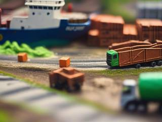
Every campaign is a new generated place, and each gets a twist or two: the heap grows faster from each meal, the trucks are quicker, the sweepers leave a slippery trail, the ground is all clay. The twists are listed before you land, so you know what kind of place you're walking into.
The seedling also carries a gift: a few of the old heap's attachments, your pick, so a new campaign starts with a trick or two already in hand rather than from nothing.
And the world reacts to the story so far. Word gets around. A heap that leaned on its magnet lands somewhere whose fleet has gone rubber and plastic; a heap that grew huge early finds the next town has walled its dump. The opposition changes its approach rather than getting tougher, so you're pushed to play differently, not harder.
Trivia
The design began as one engine with nine possible settings, each meant to be its own game with its own look and its own quirks. The sentient landfill is the one that survived the cut.
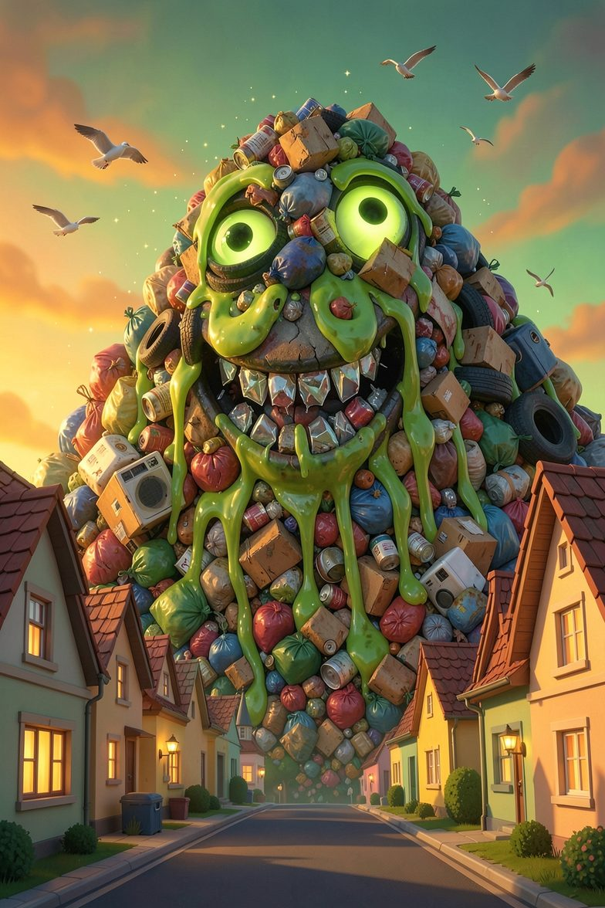
Notice of service disruption
Landfill Leviathan: Sentient Garbage Rampage
Residents are advised that collection is suspended until further notice, because the landfill has started collecting you. Please leave the area calmly, take your lamp if you must, and do not leave anything smaller than a house unattended.
The sanitation department is responding. The landfill has eaten two of its trucks and is wearing the third.
Everything you throw away ends up somewhere. This time it's coming back.